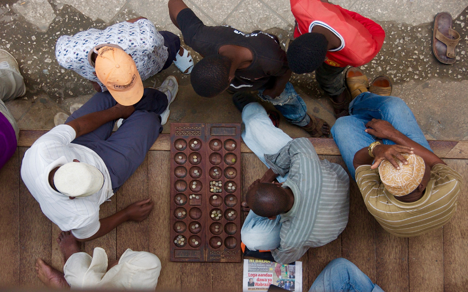
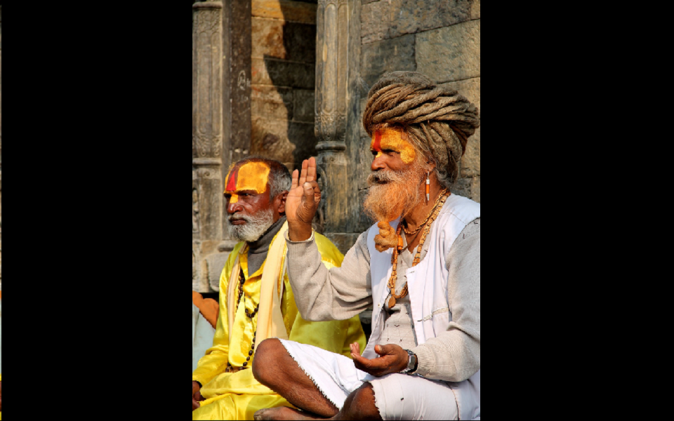

Undergraduate First Place:
Alexander Lu. The Mengjia Longshan temple was built in 1738 by settlers from Fujian. In the midst of an increasingly modern Taipei, this temple preserves ancient cultural

Graduate First Place:
Adrienne Strong. Men and Bao: Stone Town, Zanzibar. July 2014.

Graduate Second Place:
Steven McPhee. Colliding Cultures: Traditional style Chinese boat against the modern Hong Kong skyline. Hong Kong, China. August 2014

Undergraduate Third Place:
Rebecca Weiss. The terraced Lavaux Vineyards cover about 30 km of the hilly banks of Lake Geneva between Lausanne and Vevey.